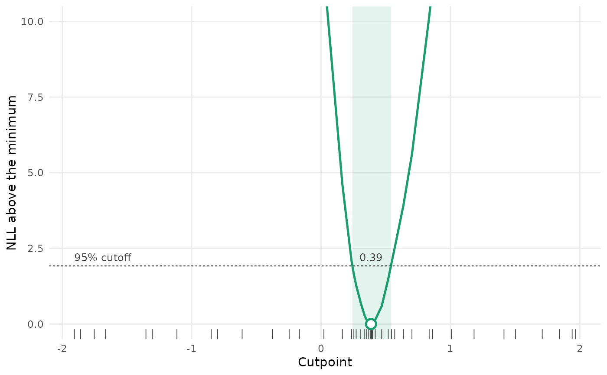
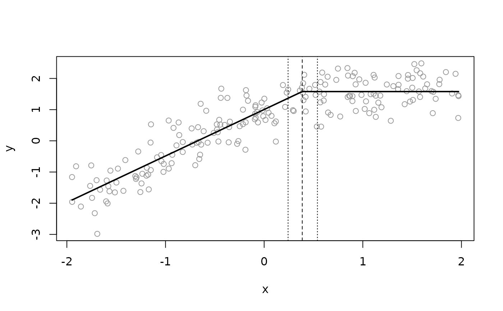

Estimate a break-point cutpoint by profile likelihood
Source:R/profile-breakpt.R
profile_breakpt.RdFits a model with a breakpt() term (see the threshold models section of
sdmTMB()) over a grid of fixed cutpoints, finds the cutpoint with the
lowest negative log likelihood (NLL), and optionally refits the model with
the cutpoint fixed at that value. Use this in place of estimating the
cutpoint directly with sdmTMB().
Usage
profile_breakpt(
formula,
...,
control = sdmTMBcontrol(),
cuts = NULL,
within = 4,
tol = NULL,
tol_coarse = NULL,
max_fits = 100L,
level = 0.95,
final = TRUE
)Arguments
- formula, ...
As in
sdmTMB().formulamust include onebreakpt()term. Passdata,mesh,family, and othersdmTMB()arguments in....- control
Optimization control options from
sdmTMBcontrol(). Used as given for the final fit, except thatmultiphaseis turned off, at least one Newton loop runs, andstartandmapare set to fix the cutpoint. Don't mapb_thresholdyourself. The profile fits uselower,upper,eval.max,iter.max,map,profile, andstart(for the first fit), but notnlminb_loops,newton_loops, ormultiphase.- cuts
Cutpoints for the first pass, on the scale of the covariate. By default, quantiles of the covariate from 1% to 99%, with extra points in the tails, plus 8 evenly spaced points over the same range. The outer 1% at each end is left out because so few observations fall beyond such a cutpoint.
- within
Refine wherever the profile is within this many NLL units of its best.
- tol
Final spacing of cutpoints next to the best cutpoint and around the ends of the interval. Defaults to 0.025 times the standard deviation of the covariate.
- tol_coarse
Spacing of cutpoints elsewhere within
within, fine enough to find a second minimum. Defaults to 4 timestol.- max_fits
Stop refining (step 2) after this many profile fits. It doesn't limit the first pass over
cutsor the search in step 3, so the total number of fits can exceed it.- level
Confidence level for the profile interval, between 0 and 1.
- final
Fit the final model at the best cutpoint? If
FALSE, returns the profile only.
Value
A list of class breakpt_profile with:
profile: a data frame with one row per profile fit: the cutpoint (cut), its NLL (nll,NAif the fit failed), NLL above the best (dnll), the slope, the maximum absolute gradient, the convergence code, and the share of observations below the cutpoint.estimate: a one-row data frame with the best cutpoint (cut), slope, NLL, the final fit's NLL (final_nll,NAiffinal = FALSE), interval (lwr,upr), AIC, numbers of observations below and above the cutpoint, and flags for checking the result (see Warnings). If the final fit improves on the profile fit at the same cutpoint,nll,aic, and the profile use the final fit's NLL.fit: thesdmTMB()fit with the cutpoint fixed atestimate$cut, orNULLiffinal = FALSE. Its stored call is the call you made, with yourcontrol, soupdate()on it refits with the cutpoint estimated directly, not profiled. Callprofile_breakpt()again instead.
For AIC, use AIC(p) (or estimate$aic), where p is the output, not
AIC(p$fit): fit doesn't count the fixed cutpoint as a parameter.
logLik(), and so AIC() and BIC(), work on the output, and AIC(p, m)
compares it with another model m. The same goes for cAIC(): use
cAIC(p), not cAIC(p$fit). Standard errors and predictions from
fit don't include uncertainty in the cutpoint. See the
threshold modeling article
for an example of predictions that include uncertainty in both the cutpoint
and the slope.
Details
The NLL of a breakpt() model has a kink in the cutpoint at every
observation, so an optimizer that estimates the cutpoint with the other
parameters can stop at the wrong cutpoint while reporting convergence, and
its standard error for the cutpoint isn't reliable. With the cutpoint held
fixed, the likelihood is smooth in the other parameters.
The profile works in three steps:
Fit the model at each cutpoint in
cuts, working outward from the median of the covariate.Wherever the profile is within
withinNLL units of its best, add cutpoints until neighbouring cutpoints are at mosttol_coarseapart. Next to the best cutpoint, and on either side of each point where the profile crosses the interval cutoff, continue until they are at mosttolapart.Search for the minimum between the best cutpoint's two neighbours with
stats::optimize().
Each profile fit starts from the nearest finished fit and skips the extra
optimization steps and TMB::sdreport() for speed.
Only the final fit runs those.
The confidence interval runs from the lowest to the highest cutpoint within
qchisq(level, 1) / 2 NLL units of the best, with the ends interpolated
between grid points. If the profile rises above the cutoff between them
(estimate$pieces > 1), the interval includes those cutpoints too. If the
profile is still inside the cutoff at the end of the grid, that end is NA.
The interval is approximate: it treats twice the NLL difference as chi-squared with 1 degree of freedom. That's reasonable when the slope is clearly non-zero. As the slope approaches zero, the cutpoint stops being identified, the profile flattens, and the interval opens up to the ends of the grid (see Warnings).
Warnings
The function warns, and sets estimate$open_interval, estimate$few_below,
or estimate$few_above, when the interval reaches the end of the grid or when
fewer than 15 observations (or 5%, if that's more) fall below or above the
best cutpoint. Either means the data say little about the cutpoint. Also check
estimate$pieces (the interval isn't continuous if greater than 1),
estimate$near_edge, estimate$refine_complete, and
estimate$max_grad_near (the largest gradient among fits within within
NLL units of the best).
Delta models, models with more than one threshold term, and a
threshold_breakpt_cut prior (see sdmTMBpriors()) aren't supported.
Examples
# Simulate a hockey-stick relationship with a cutpoint at 0.4:
set.seed(1)
d <- data.frame(x = runif(200, -2, 2))
d$y <- 1 + 1.5 * pmin(d$x, 0.4) + rnorm(200, sd = 0.5)
p <- profile_breakpt(y ~ breakpt(x), data = d, spatial = "off")
p
#> Break-point profile: 46 fits (0 failed)
#> Cutpoint 0.386, 95% interval 0.242 to 0.540
#> Slope 1.489, NLL 143.511, AIC 295.02 (k = 4, counting the cutpoint)
#> Observations below the cutpoint: 114 (57.0%)
if (ggplot2_installed()) plot(p)

p$estimate[, c("cut", "lwr", "upr", "aic")]
#> cut lwr upr aic
#> 1 0.386146 0.2422728 0.5399872 295.0226
head(p$profile)
#> cut nll slope max_grad convergence dnll prop_below
#> 1 -1.907073 315.3214 55.320418 1.432384e-05 0 171.8101 0.010
#> 2 -1.858570 314.5313 25.857863 7.226982e-05 0 171.0200 0.015
#> 3 -1.753140 312.3121 12.862433 1.852292e-06 0 168.8008 0.025
#> 4 -1.664449 306.7528 10.817995 5.908521e-07 0 163.2415 0.050
#> 5 -1.353583 278.6101 6.299973 1.924420e-05 0 135.0988 0.110
#> 6 -1.301225 275.6440 5.713523 1.489257e-05 0 132.1327 0.115
# The final fit, with the cutpoint fixed at its best value:
p$fit
#> Model fit by ML ['sdmTMB']
#> Formula: y ~ breakpt(x)
#> Data: d
#> Family: gaussian(link = 'identity')
#>
#> Conditional model:
#> coef.est coef.se
#> (Intercept) 1.00 0.04
#> x-slope 1.49 0.05
#> x-breakpt 0.39 NA
#>
#> Dispersion parameter: 0.50
#> ML criterion at convergence: 143.511
#>
#> See ?tidy.sdmTMB to extract these values as a data frame.
# The fitted hockey stick on the data, with the best cutpoint (dashed) and
# its 95% interval (dotted):
nd <- data.frame(x = seq(min(d$x), max(d$x), length.out = 200))
nd$est <- predict(p$fit, newdata = nd)$est
plot(d$x, d$y, col = "grey60", xlab = "x", ylab = "y")
lines(nd$x, nd$est, lwd = 2)
abline(v = p$estimate$cut, lty = 2)
abline(v = c(p$estimate$lwr, p$estimate$upr), lty = 3)
